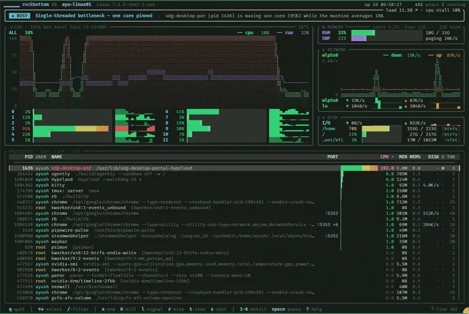

A terminal system monitor that reads the numbers for you.
htop and btop show you the numbers. rb reads them and says what's wrong in one sentence, then names the process to blame. Linux and macOS, one binary, MIT.

the verdict at the top; CPU, memory, network, disk and processes below
curl -fsSL https://raw.githubusercontent.com/1ay1/rockbottom/master/install.sh | sh
rbLinux x86_64 and arm64, macOS on Apple Silicon · checks the SHA-256 · installs to ~/.local/bin · build from source on an Intel Mac
One sentence instead of a wall of numbers
At the top of the screen sits the verdict, colour coded so you can tell at a glance whether you need to care.
▲ stressed · Memory pressure — actively swapping paging 620K/s; available RAM down to 21G
- calm
- nothing to do
- busy
- something is working, and that's allowed
- stressed
- look at the process it named
- critical
- time to close some things
Under it, Linux PSI pressure chips show how long tasks sat waiting on CPU, memory or I/O. That's the kernel telling you where the bottleneck is, and most monitors don't show it at all.
Press a number, get the whole story
Every panel opens into a full-screen pane with a plain-language reading at the bottom. Press the number or click the panel.
- 1 cpu
- load over time, load averages read against your core count, temperature, every core with its clock, and thermal throttling called out
- 2 memory
- usage trend, used / cache / buffers / available, swap with a thrash detector, memory pressure and the hungriest processes
- 3 network
- every interface with live graphs, lifetime totals, a burst detector and link state; for wifi the network name, band, link speed and signal
- 4 gpu
- load, VRAM, temperature, power, clocks, fan, encode/decode and the processes using VRAM; NVIDIA, AMD and Intel, Mali and Adreno
- 5 disk
- read/write rates, I/O pressure, every filesystem with free space and type, and the processes using the disk right now
- 6 process
- full command line, its rank against every other process, disk I/O, threads, run state in plain words, owner and listening ports
- 7 users
- who is using the machine on a shared box: CPU, RAM, processes, I/O and disk per user, and one key to end a user's processes
- T themes
- 616 themes, picked beside the live screen; type to search, Enter to keep
The main screen also has a process list you can filter, sort, pin and kill from, per-process disk I/O, which program owns which port, and battery.
Cheap to leave running
A monitor that takes a large share of a core becomes part of the problem. These numbers are measured, not guessed.
| 1 s refresh, idle desktop | CPU (one core) | memory |
|---|---|---|
| rb (reading the GPU) | ~3.9% | 9 MB |
| btop | ~1.6% | 38 MB |
| htop (no GPU) | ~0.7% | 6 MB |
btop uses less CPU, and htop less still. rb uses about a quarter of btop's memory and reads your GPU the whole time. Measured on an i5-12400F with an RTX 4060 at 120×30. On an M1 the first frame shows up in about 7 ms.
Build from source
A C++26 compiler (GCC 16+ or Clang 22+) and CMake 3.28+. On macOS, Homebrew GCC: brew install gcc cmake.
git clone --recurse-submodules https://github.com/1ay1/rockbottom
cd rockbottom
cmake -B build -DCMAKE_BUILD_TYPE=Release
cmake --build build -j
./build/rbForgot --recurse-submodules? Run git submodule update --init --recursive. The Linux release binary is fully static (musl), so it has no glibc version floor; the release page has the plain binaries and checksums.
Keys
- ↑ ↓ j k
- select a process
- /
- filter by name or pid, or
user:state:port:cpu:>5 - *
- pin the selected process to the top
- x K
- end a process (SIGTERM) / kill it (SIGKILL), asks first
- l r
- send any signal / renice
- t
- process tree ↔ flat list
- s
- cycle sort, or c cpu · m mem · i i/o · n name · P pid · o port; R reverses
- 1–7
- open a detail pane (Enter opens the process)
- Space
- pause and resume
- T
- theme picker
- ?
- every key
- q
- quit
Questions
- How is rockbottom different from htop or btop?
- htop and btop show you the numbers. rockbottom reads them and tells you what's going on in one sentence: calm, busy, stressed or critical, and which process is to blame.
- Which platforms does rockbottom run on?
- Linux (x86_64 and arm64) and macOS. Prebuilt binaries are for Linux and Apple Silicon Macs; an Intel Mac builds from source. Windows is not supported.
- Does it need any libraries installed?
- No. The Linux release is one fully static binary built against musl, so it runs on any Linux kernel of its architecture with nothing else installed.
- Can it replace nvtop?
- For most people, yes. Press 4 for the GPU pane: load over time, VRAM, temperature, power, clocks, fan, encode and decode load, and the processes using VRAM. It works with NVIDIA, AMD and Intel, and with Mali and Adreno GPUs on phones and single-board computers.
- A panel is empty. Why?
- Each collector leaves its field blank when the data isn't there, for example a masked /sys or an ioctl that needs root. Run
rb --doctorto see every collector's status and why, and paste it into the bug report. - Is rockbottom free?
- Yes. It is free and open source software under the MIT license.